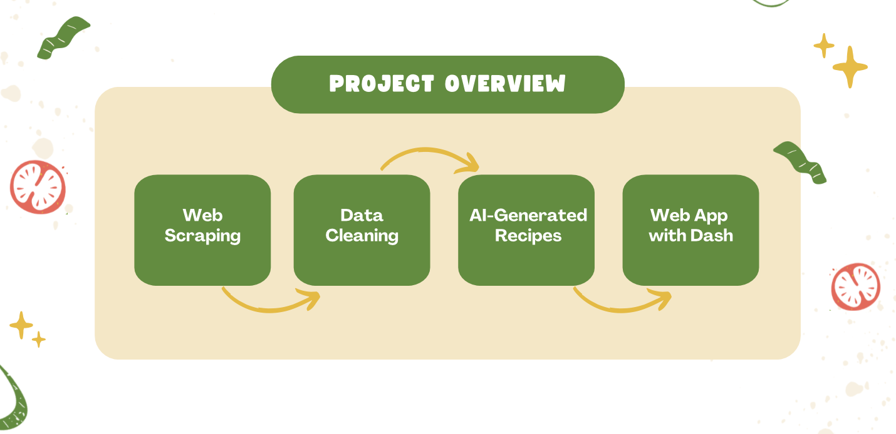
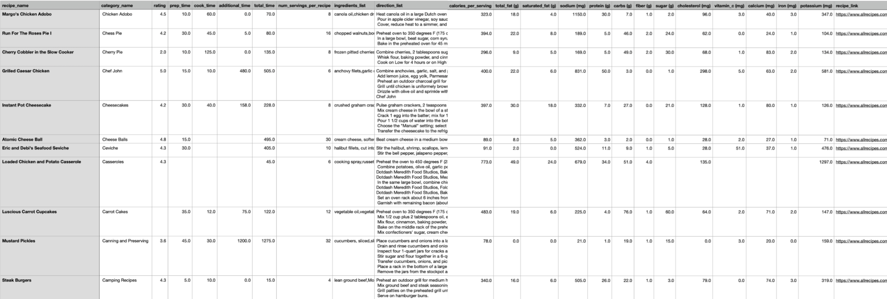
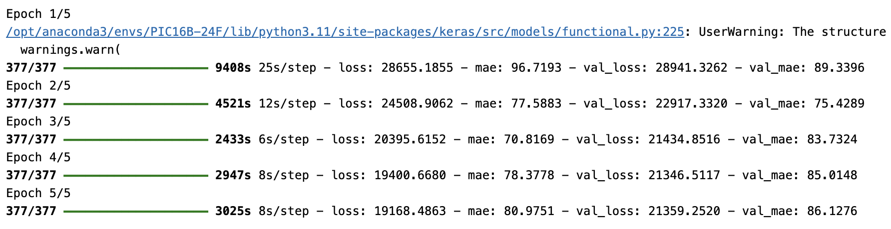
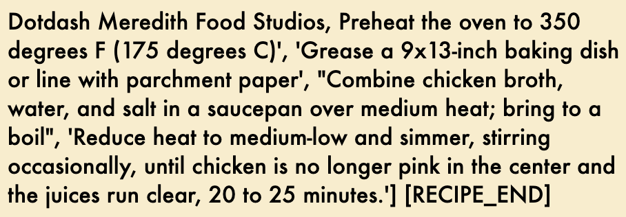
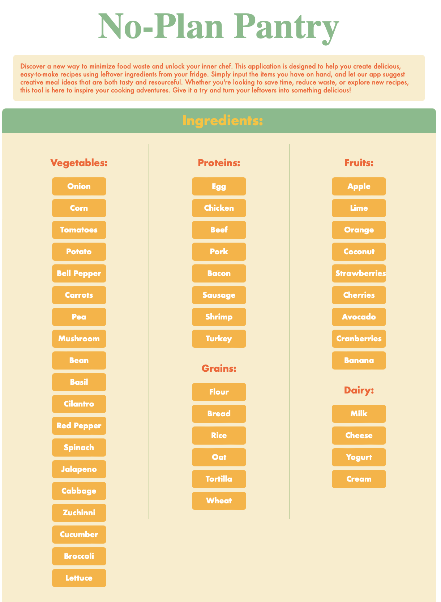
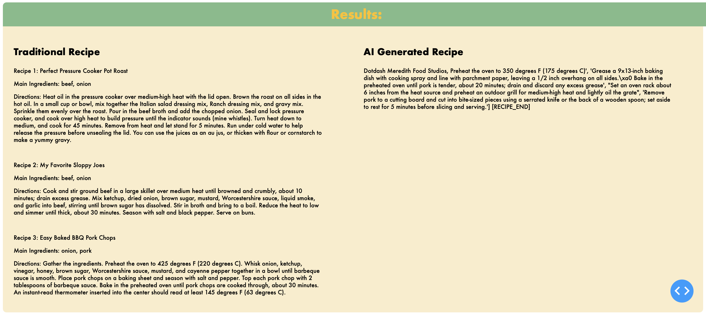

def parse(self, response):
"""
Parse the overview page and return each category link
"""
# Extract all category links and their names
categories = response.css('div.mntl-alphabetical-list__group a')
for category in categories:
link = category.css('::attr(href)').get()
# Extract category name
category_name = category.css('::text').get()
# Pass category_name to the next request using meta
yield scrapy.Request(
url=link,
callback=self.parse_menu_page,
# Output category name for each recipe
meta={'category_name': category_name}
)Project Overview
Our project, “No-Plan Pantry”, aims to minimize food waste and inspire creativity in the kitchen by developing a web-application which generates recipes based on user-inputted ingredients. Using web scraping, recipes are collected from allrecipes.com and cleaned to ensure data quality. Advanced machine learning models, such as GPT-2 and BERT, are further employed to generate AI-based recipes and predict cooking times using textual recipe instructions. The application integrates these features with a user-friendly interface developed using Dash.
Data cleaning plays a critical role in standardizing recipe information, such as unifying time units, extracting key ingredients, and estimating missing cooking times. This step ensures the dataset is well-structured for machine learning models, enabling accurate recipe recommendations and cooking time predictions. The app’s interactivity allows users to select ingredients, set time or calorie preferences, and view both AI-generated and sourced recipes in an organized layout.
Overall, the No-Plan Pantry project combines data science, natural language processing, and intuitive design to create an innovative tool that empowers users to cook creatively while reducing food waste.
Here is the link to our GitHub repository.

Web Scraping allrecipes.com
To effectively scrape recipe data from allrecipes.com, we used scrapy, which is known to be efficient at web scraping. scrapy’s ensures fast performance even when dealing with large volumes of data, thus making it an ideal choice for our needs. For our project, we designed a custom scraper, called RecipeSpider, which is tailored to navigate through the site’s structure and extract key pieces of recipe-related information.
Our RecipeSpider consists of three main methods to process different parts of the site: parse, parse_menu_page, and parse_detail_page. These methods are meticulously crafted to extract various attributes of each recipe, which includes the recipe’s name and category, its rating, preparation times, number of servings per recipe, list of ingredients, cooking directions, nutritional information, and the direct URL to the recipe. This comprehensive data collection is crucial for our web application.
Here’s an in-depth look at the purpose of each method within RecipeSpider:
parse: This method initiates the scraping process by fetching and parsing the main page URLs. It extracts the links to individual recipes and sends them to theparse_detail_pagefor further extraction.parse_menu_page: Utilized for scraping pages that list multiple recipes, this method systematically collects links to all recipes on the menu page and queues them for detailed parsing.parse_detail_page: The core of our scraping effort, this method delves into each recipe’s detail page, extracting all the specified attributes. It’s capable of handling dynamically loaded content, ensuring that no part of the recipe’s data is missed.
Here is what each method looks like:
def parse_menu_page(self, response):
"""
Parse each category page and follow each recipe link.
"""
# Access category name from response.meta
category_name = response.meta['category_name']
# Extract each recipe link on the category page
three_recommended_recipes = response.css("div[id='mntl-three-post__inner_1-0'] a::attr(href)").getall()
all_recipes = response.css("div[id='mntl-taxonomysc-article-list-group_1-0'] a::attr(href)").getall()
recipe_links = three_recommended_recipes + all_recipes
# Follow each recipe link to get recipe details
for recipe_link in recipe_links:
yield scrapy.Request(url=recipe_link,
callback=self.parse_detail_page,
meta={'category_name': category_name} # to later output category name for each recipe
)def parse_detail_page(self, response):
"""Extract recipe name, prep time, cook time, total time, ingredients, directions, and
nutrition facts (per serving) from each recipe page
"""
# Access category name from response.meta
category_name = response.meta['category_name']
recipe_name = response.css("h1::text").get()
# Extract recipe rating (will yield None if no ratings exist)
recipe_rating = response.css("div[id='mm-recipes-review-bar__rating_1-0']::text").get()
# Extract the time information individually and handle missing values
# (missing values will return None)
prep_time = response.xpath("//div[div[text()='Prep Time:']]/div[@class='mm-recipes-details__value']/text()").get()
cook_time = response.xpath("//div[div[text()='Cook Time:']]/div[@class='mm-recipes-details__value']/text()").get()
total_time = response.xpath("//div[div[text()='Total Time:']]/div[@class='mm-recipes-details__value']/text()").get()
servings = response.xpath("//div[div[text()='Servings:']]/div[@class='mm-recipes-details__value']/text()").get()
# this gives list of ingredients AND amount of ingredients (need manipulation)
# raw_ingredients_list = response.css("ul.mm-recipes-structured-ingredients__list li.mm-recipes-structured-ingredients__list-item ::text").getall()
ingredients_list = response.css('span[data-ingredient-name="true"]::text').getall()
direction_list = response.css('ol[class="comp mntl-sc-block mntl-sc-block-startgroup mntl-sc-block-group--OL"] p::text').getall()
# Extract nutrition facts with handling for missing values
# (missing values will return None)
values = response.css("tbody.mm-recipes-nutrition-facts-label__table-body.text-utility-300 td::text").getall()
nutrition_data = {}
# Define the labels we are interested in and use XPath to find each one
nutrients = {
'Total Fat': response.xpath("normalize-space(//tr[td/span[contains(text(), 'Total Fat')]]/td[1]/span/following-sibling::text()[1])").get(),
'Saturated Fat': response.xpath("normalize-space(//tr[td/span[contains(text(), 'Saturated Fat')]]/td[1]/span/following-sibling::text()[1])").get(),
'Cholesterol': response.xpath("normalize-space(//tr[td/span[contains(text(), 'Cholesterol')]]/td[1]/span/following-sibling::text()[1])").get(),
'Sodium': response.xpath("normalize-space(//tr[td/span[contains(text(), 'Sodium')]]/td[1]/span/following-sibling::text()[1])").get(),
'Total Carbohydrate': response.xpath("normalize-space(//tr[td/span[contains(text(), 'Total Carbohydrate')]]/td[1]/span/following-sibling::text()[1])").get(),
'Dietary Fiber': response.xpath("normalize-space(//tr[td/span[contains(text(), 'Dietary Fiber')]]/td[1]/span/following-sibling::text()[1])").get(),
'Total Sugars': response.xpath("normalize-space(//tr[td/span[contains(text(), 'Total Sugars')]]/td[1]/span/following-sibling::text()[1])").get(),
'Protein': response.xpath("normalize-space(//tr[td/span[contains(text(), 'Protein')]]/td[1]/span/following-sibling::text()[1])").get(),
'Vitamin C': response.xpath("normalize-space(//tr[td/span[contains(text(), 'Vitamin C')]]/td[1]/span/following-sibling::text()[1])").get(),
'Calcium': response.xpath("normalize-space(//tr[td/span[contains(text(), 'Calcium')]]/td[1]/span/following-sibling::text()[1])").get(),
'Iron': response.xpath("normalize-space(//tr[td/span[contains(text(), 'Iron')]]/td[1]/span/following-sibling::text()[1])").get(),
'Potassium': response.xpath("normalize-space(//tr[td/span[contains(text(), 'Potassium')]]/td[1]/span/following-sibling::text()[1])").get(),
}
# Clean the extracted values (remove extra whitespace) and add them to nutrition_data
for nutrient, value in nutrients.items():
nutrition_data[nutrient] = value.strip() if value else None
calories = response.css("tr.mm-recipes-nutrition-facts-label__calories th.mm-recipes-nutrition-facts-label__table-head-subtitle span + span::text").get()
total_fat = nutrition_data.get("Total Fat")
saturated_fat = nutrition_data.get("Saturated Fat")
sodium_mg = nutrition_data.get("Sodium")
grams_of_protein = nutrition_data.get("Protein")
grams_of_carbs = nutrition_data.get("Total Carbohydrate")
fiber = nutrition_data.get("Dietary Fiber")
sugar = nutrition_data.get("Total Sugars")
cholesterol_mg = nutrition_data.get("Cholesterol")
vitamin_c_mg = nutrition_data.get("Vitamin C")
calcium_mg = nutrition_data.get("Calcium")
iron_mg = nutrition_data.get("Iron")
potassium_mg = nutrition_data.get("Potassium")
yield {'recipe_name' : recipe_name,
'category_name' : category_name,
'rating' : recipe_rating,
'prep_time' : prep_time,
'cook_time' : cook_time,
'total_time' : total_time,
'num_servings_per_recipe' : servings,
'ingredients_list' : ingredients_list,
'direction_list': direction_list,
'calories_per_serving' : calories,
'total_fat (g)' : total_fat,
'saturated_fat (g)' : saturated_fat,
"sodium (mg)" : sodium_mg,
'protein (g)' : grams_of_protein,
'carbs (g)' : grams_of_carbs,
'fiber (g)' : fiber,
'sugar (g)' : sugar,
'cholesterol (mg)' :cholesterol_mg,
'vitamin_c (mg)' :vitamin_c_mg,
'calcium (mg)' : calcium_mg,
'iron (mg)' : iron_mg,
'potassium (mg)' : potassium_mg,
'recipe_link' : response.url
}To speed up the process of scraping allrecipes.com, we maxed out the speed by setting DOWNLOAD_DELAY = 0 and CONCURRENT_REQUESTS = 32. To scrape more safely, we set AUTOTHROTTLE_ENABLED = True to allow our scraper to slow down in case if it detects server latency. Despite these changes to settings.py, it still ended up taking us roughly 2 hours to scrape the recipes. We ended up with ~15.2k recipes.
Here’s a screenshot of what the scraped data looks like:

Data Cleaning with BERT
After gathering all available recipes from AllRecipes.com, we proceed with data cleaning and feature engineering to create a clearer and more comprehensive dataset for subsequent web application development. Upon inspecting the data frame, several key objectives must be addressed: 1. Standardize input types and formats. 2. Remove incomplete recipes that lack ingredient and direction lists. 3. Extract the main ingredients for each recipe from the provided ingredient lists. 4. Standardize all time-related columns to minutes and compute any missing sub-time values based on the available data. 5. Predict the total time for recipes lacking time-related information.
Upon closer inspection of the dataset, the ingredient list is a lengthy string containing complex information. To extract the main ingredients as a list, we need to apply natural language processing (NLP) techniques. To understand the structure of the ingredient composition, we summarize the word combination occurrences by creating a dataset that captures the frequency of each ingredient-related term. This approach allows us to identify the most common ingredients across the dataset and better understand the patterns in the ingredient lists.
# Understand the structure of ingredients list
# Stop words to ignore
stop_words = {'and', 'or', 'with', 'in', 'on', 'to',
'of', 'for', 'as', 'the', 'a', 'an'}
# Function to count all word occurrences
def count_word_occurrences(ingredient_strings):
all_words = []
for ingredient_string in ingredient_strings:
if isinstance(ingredient_string, str):
ingredient_string = re.sub(r'[^\w\s]', '', ingredient_string.lower())
words = ingredient_string.split()
filtered_words = [word for word in words if word not in stop_words]
all_words.extend(filtered_words)
# Count frequencies
return Counter(all_words)
# Count word occurrences for all recipes
ingredients_counts = count_word_occurrences(recipes['ingredients_list'])
# Convert to a DataFrame
ingredients_counts = (
pd.DataFrame(ingredients_counts.items(), columns=['Word', 'Count'])
.sort_values(by='Count', ascending=False)
.reset_index(drop=True)
)Building on the findings above and incorporating the ingredient information provided on AllRecipes.com, we define a list of keywords to search for within each ingredient list. For certain plural forms, such as “berry” versus “berries,” we include the shared root of both terms to ensure that all relevant information is accurately captured. Then, we use an NLP function to apply the extraction process across the dataset, efficiently identifying and extracting the main ingredients from each recipe.
keywords = ['chicken', 'onion', 'tomatoes', 'bread', 'bean', 'bell pepper',
'red pepper', 'sweet pepper','lemon', 'beef', 'pork', 'mushroom',
'rice', 'basil', 'cilantro', 'egg', 'milk', 'spinach', 'shrimp',
'orange', 'lime', 'sausage', 'bacon', 'pineapple', 'peanut',
'strawberr', 'coconut', 'pecan', 'apple', 'potato', 'squash',
'jalapeno', 'lettuce', 'tortilla', 'pea', 'amaranth', 'apricot',
'avocado', 'banana', 'barley', 'brisket', 'wheat', 'duck',
'fish', 'flax seed', 'goat', 'turkey', 'lamb', 'mango', 'oat',
'peach', 'pear', 'plum', 'pomegranate', 'salmon', 'shrimp',
'lobster', 'sardine', 'catfish', 'tuna', 'eel ', 'anchovy',
'cucumber', 'eggplant', 'kale', 'lemongrass', 'leek', 'radish',
'cauliflower', 'cabbage', 'asparagus', 'broccoli', 'endive',
'okra', 'sweet potato', 'brussels sprouts', 'leek', 'carrot',
'green beans', 'beet', 'bok choy', 'spinach', 'pumpkin', 'cranberr',
'parsnip', 'grape', 'grapefruit', 'turnip', 'honeydew melon',
'rhubarb', 'blackberr', 'cantaloupe', 'cherr', 'kiwi', 'plum',
'zucchini', 'corn', 'cheese', 'chocolate', 'flour']
# Function to extract keywords from ingredients_list
def extract_keywords(ingredient_list, keywords):
"""
Extracts specified keywords from a given ingredient list
Args:
ingredient_list (str): A string representing the list of ingredients
keywords (list): A list of keywords to search for within the ingredient list
Returns:
main_ingreidents: A sorted list of unique keywords found in the ingredient list
"""
# Check if ingredient_list is a string; if not, treat it as empty
if not isinstance(ingredient_list, str):
return ''
# Normalize text and check for keywords
ingredient_list = ingredient_list.lower()
main_ingredients = [keyword for keyword in keywords if keyword in ingredient_list]
return sorted(set(main_ingredients))Another challenge in this phase is predicting the total cooking time for recipes that lack any time information in the original dataset. With 731 such recipes, comprising approximately 1/15 of the cleaned dataset, the limited data availability requires careful handling to maximize the utility for subsequent web application development. Predicting the total cooking time for these recipes is essential.
Upon examining the composition of these recipes, they tend to feature vague and experience-based instructions with repetitive or inconsistent time references, making direct numerical extraction infeasible. To address this, we will implement a model capable of analyzing, interpreting the steps, and estimating an integer value representing the cooking time based on the instructions provided.
After extensive research, the most suitable model for this case is BERT—Bidirectional Encoder Representations from Transformers. BERT is particularly effective for understanding the context of words in a sentence due to its bidirectional training approach, making it well-suited for interpreting the nuanced and vague instructions often found in recipe steps.
The BERT model is imported, and the Functional API is used to add additional layers, enabling further customization and optimization for improved model performance in this specific task.
# Define a custom model to wrap BERT
@register_keras_serializable()
class BERTWrapper(tf.keras.Model):
def __init__(self, bert_model, **kwargs):
super(BERTWrapper, self).__init__(**kwargs)
self.bert_model = bert_model
self.pooling_layer = GlobalAveragePooling1D()
self.dropout = Dropout(0.3)
self.dense1 = Dense(128, activation=None, kernel_regularizer=regularizers.l2(0.01))
self.batch_norm1 = BatchNormalization()
self.relu1 = LeakyReLU(alpha=0.1)
self.dense2 = Dense(64, activation=None, kernel_regularizer=regularizers.l2(0.01))
self.batch_norm2 = BatchNormalization()
self.relu2 = LeakyReLU(alpha=0.1)
self.output_layer = Dense(1)
def call(self, inputs, **kwargs):
# Extracting the last hidden state from the BERT output
output = self.bert_model(input_ids=inputs['input_ids'], attention_mask=inputs['attention_mask'])
last_hidden_state = output.last_hidden_state
pooled_output = self.pooling_layer(last_hidden_state)
x = self.dropout(pooled_output)
x = self.dense1(x)
x = self.batch_norm1(x)
x = self.relu1(x)
x = self.dense2(x)
x = self.batch_norm2(x)
x = self.relu2(x)
output = self.output_layer(x)
return outputAfter fine-tuning the dataset and adjusting the hyperparameters, the training results demonstrate an overall improvement in both loss and mean absolute error (MAE) over the course of the training process. The initial loss and MAE values are high, which is expected given the complexity and variability of the dataset. As training progresses, there is a noticeable decline in both metrics, particularly during the first two epochs, indicating that the model effectively learns key patterns from the data. However, the improvement slows in later epochs, with both training and validation metrics stabilizing, and in some cases, showing slight fluctuations, which may suggest diminishing returns in model optimization.

The model predicted the following unique outputs:
array([66, 75, 76, 78, 79, 80, 81, 82, 83, 84, 85, 86, 87, 88, 89, 90, 91, 92, 93, 94, 95, 96, 97, 98, 99, 100, 101, 102, 103, 104, 105, 106, 107, 108, 111, 113, 114, 116, 117, 118, 119, 120, 121, 122, 123, 124, 125, 126, 127, 128, 129, 130, 136, 140, 146, 147]).
Upon randomly reviewing the corresponding original instructions, the predicted outputs appear reasonable and aligned with expectations. The diversity of predictions suggests the model is effectively capturing the nuances in the input data, providing a broad yet consistent range of outputs.
AI-Generated Recipes with GPT-2
- at least 2 paragraphs of description
- at least one code snippet
- at least one figure (e.g. screenshot of website, plotly, matplotlib, etc)
To further enhance our culinary application, we decided to leverage the power of natural language processing by training a GPT-2 model from Hugging Face. The goal was to create an intelligent system capable of generating complete recipes based on user-specified ingredients and time constraints.
After cleaning our dataset of recipes, we proceeded with the task of fine-tuning GPT-2. This stage involved training the model to understand and produce recipe text that is not only coherent and contextually appropriate but also tailored to fit the culinary preferences and constraints input by the user.
To start, we structured the recipe data to align with the requirements of the GPT-2 model by incorporating special tokens to signify the start and end of a recipe. This was crucial for the model to recognize individual recipe boundaries during generation. The data was formatted as follows in our recipes DataFrame:
recipes['formatted_text'] = recipes.apply(lambda row: f"[RECIPE_START] Ingredients: {row['main_ingredients']} Total Time: {row['total_time']} minutes Directions: {row['direction_list']} [RECIPE_END]", axis=1)Then, using the GPT-2 tokenizer, we converted the formatted text into a sequence of tokens, which the model uses as input. This tokenization process is crucial as it translates the raw text into a numerical format that the model can understand:
tokenizer = GPT2Tokenizer.from_pretrained('gpt2')
tokenizer.pad_token = tokenizer.eos_token
tokenized_data = hf_dataset.map(tokenize_function, batched=True)Lastly, we trained GPT-2 using the tokens from earlier:
# fine-tune GPT-2 model
from datasets import Dataset, DatasetDict
from transformers import GPT2LMHeadModel, Trainer, TrainingArguments
# split data set into train and test
split_datasets = tokenized_data.train_test_split(test_size=0.1)
dataset_dict = DatasetDict({
'train': split_datasets['train'],
'test': split_datasets['test']
})
def add_labels(examples):
examples['labels'] = examples['input_ids'].copy()
return examples
# Apply the function to add labels
dataset_dict = dataset_dict.map(add_labels)
# Resize model embeddings to accommodate new tokens
model.resize_token_embeddings(len(tokenizer))
# Set up training arguments
training_args = TrainingArguments(
output_dir='./results',
num_train_epochs=3,
per_device_train_batch_size=1,
gradient_accumulation_steps=4,
per_device_eval_batch_size=2,
save_steps=500,
save_total_limit=2,
warmup_steps=500,
weight_decay=0.01,
logging_dir='./logs',
logging_steps=10,
dataloader_num_workers=4
)
# Initialize Trainer
trainer = Trainer(
model=model,
args=training_args,
train_dataset=dataset_dict['train'],
eval_dataset=dataset_dict['test']
)
# Start training
trainer.train()To demonstrate the capabilities of our trained GPT-2 model, let’s consider a scenario where the user inputs ingredients such as “chicken,” “beef,” and “basil,” and sets a time constraint of 60 minutes. The trained GPT-2 model, having been finely tuned with a diverse recipe dataset, generates a coherent and structured recipe as follows on our web app:

Although the model still has room for improvement, this output demonstrates a noticeable advancement over the base GPT-2 model. The recipe not only adheres to the given ingredients and time constraints but also forms a more logical set of directions. This improvement underscores the value of our specialized training, which enables the model to produce recipes that are both imaginative and practical, enhancing the user’s cooking experience by offering personalized culinary solutions. This example illustrates how our AI-driven approach can streamline meal planning and introduce creativity into everyday cooking practices.
Web Development with Dash
Essentially, the “No-Plan Pantry” web application was built using Dash, focusing on a visually appealing and interactive layout. The purpose of this layout is to create a user-friendly interface which allows users to input ingredients, specify additional information, such as calorie range, and view recipe suggestions. The design elements ensure an intuitive user experience, using CSS-like dictionaries to maintain visual consistency across sections.
There are several key components to this app layout:
Title + Description: The title (“No-Plan Pantry”) and a descriptive paragraph are styled to captivate and inform users about the web application’s goals, which are to reduce food waste and inspire creativity in the kitchen.
Ingredient Selection: The application categorizes ingredients into sections (e.g., Vegetables, Proteins, Grains) with clickable buttons. Each button is styled to be user-friendly and visually engaging, using
button_styleto apply properties like padding, colors, and fonts.Additional Inputs: Users can specify calorie ranges via input fields and cooking/prep time using a slider. These components ensure that recipe recommendations align with personal dietary needs and time constraints.
Results Section: A dedicated area displays two separate sections after processing the user’s input: One for the AI generated recipe suggestions and one for the recipes from allrecipes.com.
Example Code Snippet:
Here is an excerpt which displays the ingredient selection section, where clickable buttons allow users to select items.
html.Div([
html.H2("Ingredients:", style=header_style),
html.Div([
# Vegetables column
html.Div([
html.H3("Vegetables:", style=ingredients_section),
html.Div([
html.Button("Onion", id="onion-btn", style=button_style),
html.Button("Tomatoes", id="tomatoes-btn", style=button_style),
html.Button("Potatoes", id="potatoes-btn", style=button_style),
], style={'display': 'flex', 'flexDirection': 'column', 'padding': '10px'}),
], style={'flex': '1'}),
# Additional columns for Proteins, Grains, etc.
], style={'display': 'flex', 'justifyContent': 'space-around'}),
], style={'backgroundColor': '#FAEDCA', 'padding': '20px'})Visualization:
Here is how the web-application turned out:

As we can see, there is a description and ingredients section. These were crafted using many html
Callback Function:
For the web application, a single callback function is implemented to efficiently manage all the core functionalities of the No-Plan Pantry. When an ingredient button is clicked, the corresponding ingredient is added to a dynamically updated list displayed in the app. Upon pressing the “Submit” button, the selected ingredients, along with user-defined parameters such as time limit and calorie range, are used to query a recipe database. If matching recipes are found, up to three recipes are displayed, each with its name, main ingredients, and directions. In addition, an AI recipe is generated using the fine-tuned GPT-2 based model that incorporates the selected ingredients and constraints. After a successful query or AI generation, the dynamic memory of selected ingredients is cleared, and the display is reset. This callback combines the functionality of ingredient buttons and the submission button into a single function because Dash does not allow duplicate output variables, such as the section displaying selected ingredients.
@app.callback(
[Output('name_1', 'children'),
Output('ingredients_1', 'children'),
Output('directions_1', 'children'),
Output('name_2', 'children'),
Output('ingredients_2', 'children'),
Output('directions_2', 'children'),
Output('name_3', 'children'),
Output('ingredients_3', 'children'),
Output('directions_3', 'children'),
Output('ingredients-dialog', 'displayed'),
Output('ingredients-list', 'children'),
Output('display-ingredients', 'children'),
Output('ai_directions', 'children')], # AI-generated recipe
[Input('submit-btn', 'n_clicks')] +
[Input(f'{item}-btn', 'n_clicks') for item in [
"onion", "corn", "tomatoes", "potato", "bell pepper", "carrot", "pea", "mushroom",
"bean", "basil", "cilantro", "red pepper", "spinach", "jalapeno", "cabbage", "zucchini",
"cucumber", "broccoli", "lettuce", "egg", "chicken", "beef", "pork", "bacon", "sausage",
"shrimp", "turkey", "flour", "bread", "rice", "oat", "tortilla", "wheat", "apple", "lime",
"orange", "coconut", "strawberries", "cherries", "avocado", "cranberries", "banana", "milk",
"cheese", "yogurt", "cream"
]],
[State('time-limit-slider', 'value'),
State('min-calories-input', 'value'),
State('max-calories-input', 'value'),
State('display-ingredients', 'children')],
prevent_initial_call=True
)
def update_recipes_and_ingredients(*args):
ctx = dash.callback_context
triggered_id = ctx.triggered[0]['prop_id'].split('.')[0] if ctx.triggered else None
# If an item button is clicked
if triggered_id and triggered_id != 'submit-btn': # Item button clicked
ingredient = triggered_id.split('-')[0]
success = insert_ingredient(ingredient)
ingredients = fetch_ingredients()
list_items = [html.Li(ingredient[0]) for ingredient in ingredients]
display_ingredients = [ingredient[0] for ingredient in ingredients]
return [None] * 9 + [False, list_items, display_ingredients, ""]
# If the submit button is clicked
if triggered_id == 'submit-btn' and args[0] > 0: # args[0] is n_clicks for submit-btn
time_limit = args[-4] or 180 # Default to 180 if not set
min_calories = args[-3] or 0 # Default to 0 if not set
max_calories = args[-2] or 2000 # Default to 2000 if not set
display_ingredients = args[-1]
# Check if no ingredients are selected
if not isinstance(display_ingredients, list) or len(display_ingredients) == 0:
return [None] * 9 + [True, [], [], ""] # Show dialog and reset outputs
# Retrieve recipes using the query function
try:
df = query_recipes(
"recipes_db.sqlite",
ingredients=display_ingredients,
time=time_limit,
min_calories=min_calories,
max_calories=max_calories
)
except Exception as e:
return [None] * 9 + [False, [], [], ""] # Clear lists and hide the dialog
# Generate a fallback AI recipe
from transformers import GPT2LMHeadModel, GPT2Tokenizer
model_tuned = GPT2LMHeadModel.from_pretrained("./fine_tuned_recipe_model")
tokenizer = GPT2Tokenizer.from_pretrained("./fine_tuned_recipe_model")
prompt = f"Generate a recipe with the following ingredients: {', '.join(display_ingredients)}. Keep it under {time_limit} minutes."
inputs = tokenizer(prompt, return_tensors="pt", truncation=True)
output_tuned = model_tuned.generate(
input_ids=inputs["input_ids"],
attention_mask=inputs["attention_mask"],
max_length=250,
num_beams=5,
no_repeat_ngram_size=2,
early_stopping=True,
eos_token_id=tokenizer.eos_token_id)
generated_recipe = tokenizer.decode(output_tuned[0], skip_special_tokens=True)
# Remove the prompt from the generated recipe
if generated_recipe.startswith(prompt):
generated_recipe = generated_recipe[len(prompt):].strip()
# If recipes are found
if not df.empty:
recipe_1 = df.iloc[0] if len(df) > 0 else None
recipe_2 = df.iloc[1] if len(df) > 1 else None
recipe_3 = df.iloc[2] if len(df) > 2 else None
def format_recipe(recipe, index):
if recipe is None:
return (
f"Recipe {index}: No recipe found",
"Main Ingredients: No ingredients",
"Directions: No directions"
)
name = f"Recipe {index}: {recipe.get('recipe_name', 'No recipe name')}"
ingredients = recipe.get('main_ingredients', [])
if isinstance(ingredients, list):
ingredients = f"Main Ingredients: {', '.join(ingredients)}"
directions = f"Directions: {recipe.get('direction_list', 'No directions')}"
return name, ingredients, directions
name_1, ingredients_1, directions_1 = format_recipe(recipe_1, 1)
name_2, ingredients_2, directions_2 = format_recipe(recipe_2, 2)
name_3, ingredients_3, directions_3 = format_recipe(recipe_3, 3)
# Clear ingredients after successful query
clear_ingredients()
return (
name_1, ingredients_1, directions_1,
name_2, ingredients_2, directions_2,
name_3, ingredients_3, directions_3,
False, [], [], generated_recipe
)
# If no recipes are found, return only the AI-generated recipe
return (
"Generated Recipe: AI", "Main Ingredients: AI-generated", generated_recipe,
None, None, None,
None, None, None,
False, [], [], generated_recipe
)
# Default return
return [None] * 9 + [False, [], [], ""]
Conclusion
Remarks
The overall project is logically structured by integrating an advanced machine learning model, industry-standard frameworks, data analytics insights, neural network applications, and aesthetic design principles. Throughout the process, we encountered numerous challenges and discovered additional innovative ideas, many of which were successfully incorporated into the system. The AI-generated model, in particular, exceeded our initial expectations, providing enhanced functionality and value.
However, there remains significant room for expansion and improvement. For instance, our web scraping efforts could be scaled to acquire a much larger and more diverse dataset, further enriching the system’s capabilities. Additionally, the configuration of the AI-generated model can be optimized for greater speed and efficiency, ensuring a smoother and faster user experience. These enhancements will not only strengthen the project’s current foundation but also open the door for further innovation and scalability in the future.
Ethical Ramifications
This project does raise important ethical considerations. For instance, web scraping recipes from allrecipes.com without explicit consent may violate terms of service. Proper care must be taken to respect copyright and intellectual property. Further, user privacy raises concern, since inputted data such as ingredients must be protected under laws like GDPR. AI-generated recipes may also produce unsafe or inaccurate instructions, requiring transparency in regards to their limitations. Bias in the dataset could favor certain cuisines, which reduces inclusivity. Finally, although this project aims to reduce food waste, it may lead to users purchasing more ingredients, potentially causing waste accumulation. To conclude, addressing these ethical issues is essential to ensuring the project’s benefits outweigh its risks.